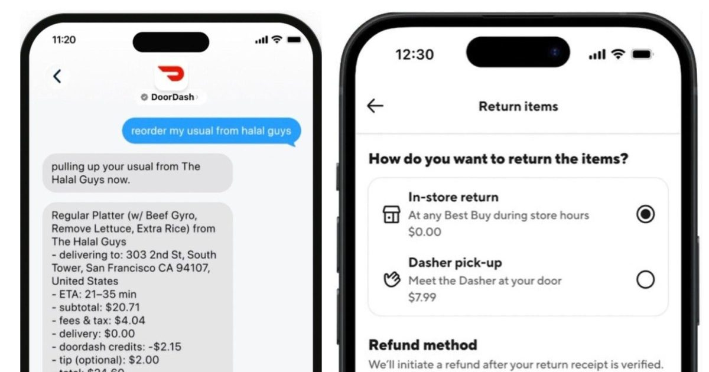

Вы можете отправить сообщение ИИ-боту DoorDash, чтобы «заказать мой обычный», и он разберется с остальным
DoorDash запускает новые способы использования местной платформы доставки, включая заказ текстовых сообщений, доставку с помощью дронов и розничную доставку.
Новая функция заказа сообщений основана на возможностях, которые чат-бот Ask DoorDash AI представил в приложении DoorDash в июне, позволяя вам получать рекомендации и разгружать просмотр, полностью пропуская приложение.
...